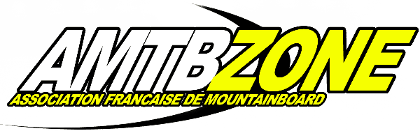

COMPTE-RENDU ASSEMBLEE GENERALE DU 15/10/2003, 20h30
Présents :
1/ Bilan Financier.
L'association finit la saison avec un solde positif de 485,25 euros au 30/09/03.
Tous les détails comptables seront disponibles auprès du président.
Nous avons notamment bénéficié de l'apport de sponsors qui nous permettent aujourd'hui de survivre en l'absence de toute autre subvention.
Merci donc à la ville de Morzine, à Ride The Hill, SixMotion et à Sicnomen qui nous permettent de nous en tirer pour l'instant.
La recherche de subventions reste ceppendant une priorité, qui sera facilitée cette année par le nombre de licenciés.
2/ Bilan Moral
Ø
Actions menées :
Au cours de l'année, nous avons organisé ou participé à de nombreuses actions ayant pour but le développement du mountainboard :
- Organisation d'un circuit de championnat de France et mise en place d'un classement officiel qui permet au sport d'être reconnu par la Jeunesse et Sport
- Initiations/Démonstrations lors du Mondial du Snowboard et du Ski aux Deux Alpes fin octobre. Le bilan est intéressant, mais la station ne semble pas être motivée pour développer cette activité lors du Mondial. Elle nous laisse juste un coin de piste en herbe pour faire des initiations, sans autre apport. Loin de nous l'idée de se prendre pour des stars. Cependant, étant donné que beaucoup de bénévoles se déplacent des quatre coins de la France pour venir sur ces évènements, nous demandons maintenant une réelle reconnaissance du sport, avec une structure pour faire des démonstrations et pouvoir montrer rééllement le sport, ainsi qu'une mise en valeur de l'activité. Cell-ci étant le cadet de leurs soucis, nous nous trouvons dans une impasse.
- Initiations/Démonstrations sur plusieurs week-end par différents membres de l'AMTB à travers la France. Actions à mettre en valeur par le biais des clubs.
- Le site internet mis en place par Paul et Mikael est un succès. Plus de 300 inscrits, statistiques en hausse permanente avec près de 8000 visiteurs par mois. Grâce à ce site la visibilité de l'AMTB ne cesse de s'accroitre. www.amtbzone.com
- Création par Paul et une équipe d'étudiants d'une plaquette présentant le mountainboard et l'AMTB, plaquette financée par KHEO et RIDE THE HILL. Ces sponsors permettent à l'AMTB de pouvoir être diffusée dans de nombreux endroits (shops, points-jeunes, cyber café...). La diffusion a commencée et s'étend au fur et à mesure.
- Organisation du Morzine Mountainboard Fest du 22 au 24 août 2003. Plus grosse manifestation européénne de l'année, franc succès pour les étrangers, mitigé pour les français, l'alchimie reste à trouver mais la solution n'est pas loin et devrait se mettre en place l'année prochaine.
- Développement du nombre de licenciés. Même si la solution n'a pas fait plaisir à tout le monde, l'obligation pour tous les riders français de prendre une licence AMTB à Morzine nous a permis de collecter un nombre conséquent de licenciés qui nous permettra certainement cette année de pouvoir demander des subventions au FNDS. Cette solution était INDISPENSABLE pour aider au développement du mountainboard. Et n'oubliez pas que c'est avant tout à vous riders que cela profitera (Coûts d'inscription moins élevés, assurance à l'année, redistribution des subventions aux clubs pour le développement local ...)
- Le classement par team est à revoir. Cette année, nous avons pris tous les teams locaux ou de marques, avec également un team AMTB. Ce classement par team doit évoluer dès l'année prochaine vers un unique classemnt de teams locaux, ceux-ci se développant maintenant. Le classement par marque n'est pas significatif, et le team AMTB n'a à priori pas raison d'être vu que tous les riders appartiennent désormais à l'AMTB.
C'est pourquoi nous pensons qu'un classement tenant uniquement compte des teams locaux serait préférable.
Ø
Action à envisager pour cette nouvelle saison :
- Développement des partenariats pour que les licenciés puissent bénéficier d'encore plus d'avantages. Nous vous rappellons que vous pouvez d'ores et déjà de bénéficier de 10% de réduction sur toutes les planches de la gamme KHEO et RIDE THE HILL et que vous pourrez trouver de nombreux avantages sur le site www.sportreflex.com.
- Reconduction du circuit français avec certainement plus de dates, et nous avons déjà des contacts pour mettre en place des structures pour ces compétitions (boardercross, park...)
- Continuation des initiations/démonstrations qui sont le meilleur moyen de toucher du public. La majeure partie des gens qui viennent au mountainboard y arrivent par ce biais. Les clubs locaux y ont un rôle essentiel à jouer.
3/ Bilan sportif
Grosse satisfaction cette année que le bilan sportif ! De nombreux français ont participé aux compétitions nationales et internationales avec de beaux résultats à la clé :
- Sur plan national, 59 participants ont été classés cette année. Mikael GRAMONT est champion de France freestyle, Nicolas MALDONADO en descente, et Diego ANDERSON au cumulé (overall)
- N'oublions pas également le titre de Championne de France de Melle Deborah ANTONIOZ, qui même en courrant avecles garçons la plupart du temps, s'est mise en valeur en éliminant quelques boys au passage, ainsi que Olivier RULLIERE qui apès s'être bein entraîné sur le centre de Morzine a tout déchiré en faisant conccurence aux meilleurs anglais venus pour l'occasion.
- Sur le plan international :
AMSTERDAM : Bonne compétition en indoor à l'occasion du Nokia Totally Board. Les meilleurs riders US sont là ainsi que les meilleurs anglais. Antoine Saurat, Syvain Royer, Nicolas Maldonado, Paul Loury et Diego Anderson font bonne figure en slalom et se montrent stylés au big air. Bon délire.
NoSno Downhill Clhallenge à Quantocks (UK). Diego Anderson se fait sortir en ¼ par Leon Robbins.
Morzine Mountainboard Fest : Nicolas Maldonado fait sensation en se plaçant 2nd du dual slalom et 3ème en descente. Bien joué pour la compétition internationale la plus relevée de l'année.
Cortina International Open (IT) : Diego Anderson se classe 3ème en freestyle derrière Alex Broumbas et Austin Robbins, 5ème en descente.
Slopestyle Challenge (UK) : Grosse compéttion sur une spot énorme. Nico Maldo et Diego se classent 3ème ex-aequo derrière Chris Mac Carthy et Austin Robbins, Paul Loury est 7ème.
N'oublions pas que tous ces résultats obtenus à l'étranger ne sont pas uniquement des satisfactions personnelles mais permettent surtout au mountainboard français d'être reconnu sur le plan international comme d'un niveau conséquent, et nous ouvre ensuite plus de droits aux invitations sur des évènements particuliers comme le Nokia Totally Board ou la prochaine compétition anglaise, les championnats du Monde freestyle en inddor en février prochain. Et puis on va tout de même pas se laisser battre par des gars qui parlent même pas français quand même... ;-)
4/ Questions diverses
- Oui ou non, faire un classement ne comptant que les teams locaux, pour garder une ambiance plus saine sans faire appel à l'élitisme des marques ?
- Faut-il essayer de faire de Morzine un rassemblement international réservé aux meilleurs français, ou plutôt essayer de mieux organiser les choses en proposant des catégories pour tous (comme aux US, un classement amateur et un classement pro), avec des modules adaptés à tous ?
Le Président La trésorière
Diego ANDERSON
Christine MICHEL